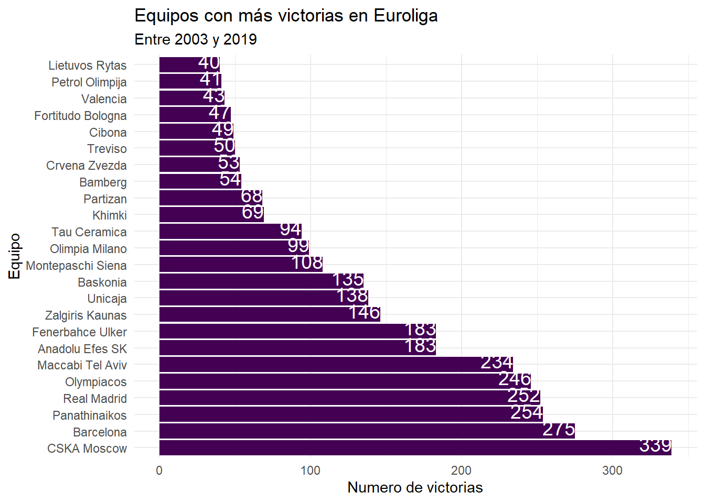

Introducción
El trabajo conssistirá de las siguientes partes:
En primer lugar, haremos una muy breve introducción de las dos competiciones que trataremos como son la NBA y Euroliga
En segundo lugar trataremos los jugadores de la NBA, más concretamente su país de procedencia y su altura representada como la histórica de los datos.
En tercer lugar comenzando con la Euroliga mostraremos los equipos con más victorias históricamente en la competición, así como el histórico de victorias dentro de este del Valencia Basket y sus mayores victorias en la competición.
Datos
Los datos de los jugadores los he obtenido aquí, y los datos de Euroliga y Valencia Basket están sacados de aquí.
Código R
Contextualización, ¿Que es la NBA y Euroliga?
La NBA o National Basketball League es la liga norteamericana de baloncesto, la más famosa y con mayores beneficios del mundo, en ella compiten las grandes estrellas del deporte, es por esto que buscaremos dentro de los datos que comprenden desde 1996 a 2021 la media histórica de altura en la competición así como el país de procedencia de las estrellas.
La Euroliga por otra partes la primera liga europea de Baloncesto, reconocida incluso por los jugadores NBA como por ejemplo Luka Doncic que comenzó jugando en ella con el Real Madrid y que comentó que es la liga con “mayor exigencia”. Es por eso que mostraremos los equipos con más victorias en la competición con datos desde 2003 a 2019.
Por último, haremos un inciso en el paso por la competición del Valencia Basket, cuyos colores corporativos figuran en la web , repasando sus mayores victorias por ventaja de puntos en la competición
NBA
Media história de altura
Un gran número de jugadores han pasado por la competición desde el año 96 y podemos observar los siguientes resultados:
Código
Altura <-ggplot(jugadores_nba) +
aes(x = "", y = player_height) +
geom_violin(adjust = 1L, scale = "area", fill = "#440154") +
labs(
x = "<-- Densidad de jugadores -->",
y = "Altura en Centímetros",
title = "Altura en cm de los jugadores de la NBA",
subtitle = "Temporadas 1996-2021"
) +
ggthemes::theme_base()
AlturaDe los resultados del gráfico podemos observar que la altura más común de estos jugadores era de unos 2 metros y 8 centímetros, llamando la atención un pequeño numero de jugadores como serían Yao Ming que llegaban a los 2 metros 30 centimetros.
No obstante los bajitos también tenemos cabida en este deporte observando jugadores (aunque escasos) que apenas llegaban al metro setenta como el base de los Nuggets Earl Boykins o aunque un poco mas alto el mas conocido Iasiah Thomas de los Celtics.
País de procedencia
Cambiando de tema, los datos siguientes nos arrojan un hecho y es que es más fácil llegar a la NBA midiendo 1,70 que siendo Español, pues según el siguiente gráfico:
Código
df_jugadores_pais<- jugadores_nba %>% group_by(country) %>% summarise(NN=n()) %>%
slice_max(NN, n=4)
jug_pais_bar<-ggplot(df_jugadores_pais) +
aes(x =reorder(country,desc(NN)), y = NN) +
geom_col(fill = "#440154") +
labs(
x = "País",
y = "Número",
title = "TOP 4 países con más jugadores NBA",
subtitle = "Desde 1996-2021"
) +
geom_text(aes(label=NN), vjust=0.001,hjust=0.5, color="black",
position = position_dodge(0.1), size=4.0
)+
ggthemes::theme_par()
jug_pais_barLos datos son arrolladores y es que la NBA tiene un claro sesgo estadounidense que rara vez pesca fuera de casa.
Pero esto tiene una explicación y es debido a todo el sistema de promoción desde los institutos, universidades con la NCAA la liga universitaria ,la NBA Summer League donde se prueban las futuras promesas en la temporada de verano sin olvidarse del Draft, una “subasta” por las futuras promesas del deporte que se llevarán los equipos en orden inverso al de la clasificación de liga.
Euroliga
Pasamos ahora a una competición muy distinta, aclamada por su dificultad técnica y gran nivel de sus equipos históricos.
Equipos con más victorias
A continuación mostraré un gráfico a cerca de los equipos más victoriosos de la competición
Código
most_wins <- euroliga%>%
select(DATE,AT,HT,WINNER)%>%
group_by(WINNER) %>%
mutate(victoria_num = sum( NN = n())) %>%
filter(victoria_num >= 40) %>%
arrange(victoria_num) %>%
mutate( suma_vic = cumsum(WINNER))%>%
arrange(desc(victoria_num))%>%
distinct(victoria_num)
most_wins
#> # A tibble: 24 × 2
#> # Groups: WINNER [24]
#> WINNER victoria_num
#> <chr> <int>
#> 1 CSKA Moscow 339
#> 2 Barcelona 275
#> 3 Panathinaikos 254
#> 4 Real Madrid 252
#> 5 Olympiacos 246
#> 6 Maccabi Tel Aviv 234
#> 7 Anadolu Efes SK 183
#> 8 Fenerbahce Ulker 183
#> 9 Zalgiris Kaunas 146
#> 10 Unicaja 138
#> # … with 14 more rows
most_wins_graph <-ggplot(most_wins) +
aes(x = reorder(WINNER,desc(victoria_num)), y = victoria_num) +
geom_col(fill = "#440154") +
labs(
x = "Equipo",
y = "Numero de victorias",
title = "Equipos con más victorias en Euroliga",
subtitle = "Entre 2003 y 2019"
) +
coord_flip() +
theme_minimal()+
geom_text(aes(label=victoria_num), vjust=0.25,hjust=0.99, color="white",
position = position_dodge(0.1), size=5.0
)
most_wins_graph
Como podemos ver, los resultados hacen honor a su fama, un total de 12 equipos superan las 100 victorias desde el 2003, donde ademas distan las victorias con los títulos ganados.
No encontramos sorpresas al ver el ránking, el primer equipo con 339 victorias es el CSKA de Moscú (chesca para los amigos), que no obstante a pesar de tener más victorias posee 8 títulos solo por detrás del Real Madrid con 10. El CSKA es un equipo actualmente en declive no obstante por el veto deportivo a los equipos rusos puesto que este año no participan en la competición y cuyas estrellas han emigrado a otros rivales.
En segundo lugar nos encontramos al F.C. Barcelona (y sí, se llama Futbol Club) con 275 victorias aunque mucho menos afortunado en títulos con tan solo 2 copas.
En tercer lugar encontramos al Panathinaikos con 254 victorias pero 6 títulos a sus espaldas (y una afición digamos peculiar).
Para encontrar al Valencia Basket tenemos que irnos (por desgracia) a la 22ª posición con 43 victorias y es que (además de no ser muy buenos) tenemos la excusa de una de las mayores críticas a la Euroliga.
La mayor crítica de la competición es un sistema de licencias por las que es muy difícil llegar la Euroliga y mantenerse.
El sistema es el siguiente: hay una serie de licencias que reparte la Euroliga a unos equipos privilegiados ya sea por historia o potencia que pase lo que pase siempre jugarán la Euroliga, aunque queden últimos no descienden. Sería el caso de los grandes anteriormente mencionados o equipos españoles como la última licencia otorgada al Baskonia.
El resto de mortales, para llegar a la competición debemos ganar la liga local o la Eurocup (2ª division europea), cosa que se hace difícil aunque en la que el Valencia Basket es especialista subiendo en 2017 con la victoria de la Liga y cuatro eurocopas que nos permitieron jugar en la primera liga.
No obstante, la única forma de mantenerte si llegas a entrar es quedar dentro del top 8, si no volverás a descender.
Mayores victorias del Valencia Basket
Dejemos de lamentarlos y para finalizar el trabajo dejaré un mejor sabor de boca con las victorias en euroliga del VBC por mayor ventaja de puntos:
Código
Valencia_eur_wins <- euroliga %>% filter(WINNER == "Valencia") %>%
slice_max(GAPT, n = 8)%>%
select(HT,AT,GAPT,DATE)
victorias_pts <- ggplot(Valencia_eur_wins) +
aes(x = reorder(AT, desc(GAPT)), y = GAPT, fill= HT)+
geom_col() +
scale_fill_manual(
values = c(Baskonia = "#56CB26",
Valencia = "#622072")
) +
labs(
x = "Equipo visitante",
y = "Diferencia de puntos",
title = "Partidos ganados por mayor diferencia de puntos",
subtitle = "A su paso por la Euroliga entre 2004 y 2018",
fill = "Juega en casa"
) +
coord_flip() +
ggthemes::theme_par()+
geom_text(aes(label=GAPT), vjust=0.25,hjust=0.99, color="white",
position = position_dodge(0.1), size=5.0
)
victorias_ptsLos primeros dos resultados nos dejan ver algo poco común en la competición europea y es una distancia de casi 40 puntos. Estas dos mayores victorias fueron contra el Unicaja de Málaga, gran histórico rival del Valencia Basket contra el que perdimos una final de Eurocup y contra el Neptunas lituano, ambos equipos mas bien débiles pero gran resultado.
El tercer mejor resultado fue contra el equipo Polaco Wroclaw (que no mentiré es la primera vez que escucho) por una ventaja de 29 puntos.
Es en cuarta y quinta posición donde encontramos quizas las victorias mas destacables por puntuación de 26 y 25 puntos contra un Bayern de Munich y el gran CSKA de Moscú.
Además como podréis observar hay un claro sesgo a ser el equipo local en estas victorias puesto que tan solo contra el Baskonia jugábamos fuera de casa. A esto en la jerga del club lo conocemos como el efecto “caldera taronja” puesto que tenemos una gran afición que se hace notar.
Bibliografía
Los datos los he obtenido de las siguientes direcciones:
Kaggle , y para obtener cada una de las dos fuentes de datos: NBA y Euroliga
Para las dudas que han surgido a lo largo del proceso de elaboración, se ha utilizado la web del profesor.
FIN
Espero haberos entretenido en este trabajo sobre el básket y el BigData, Amunt València!